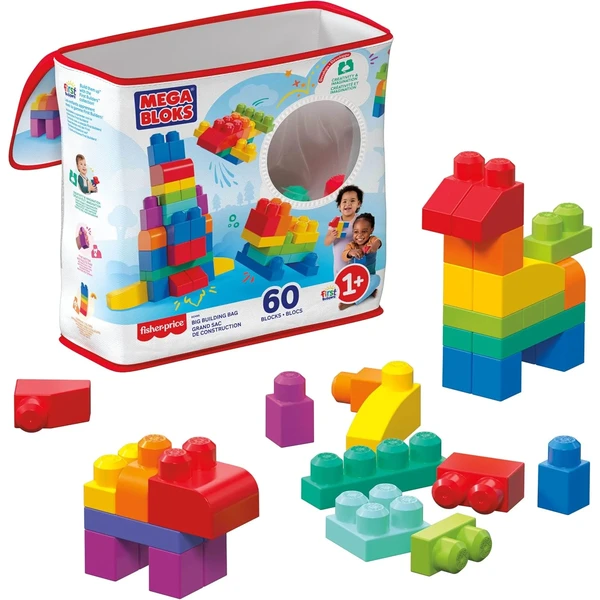
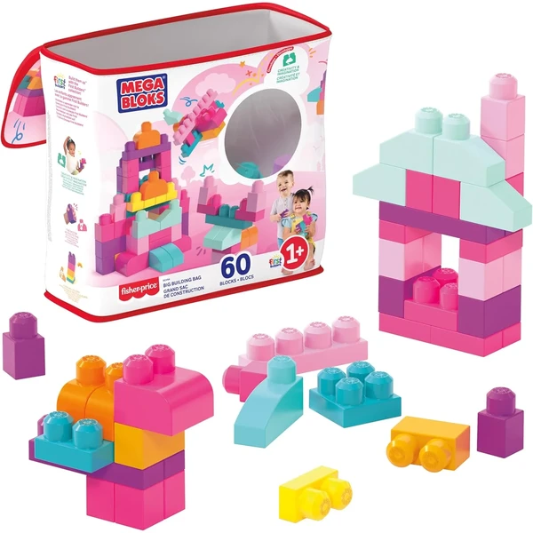
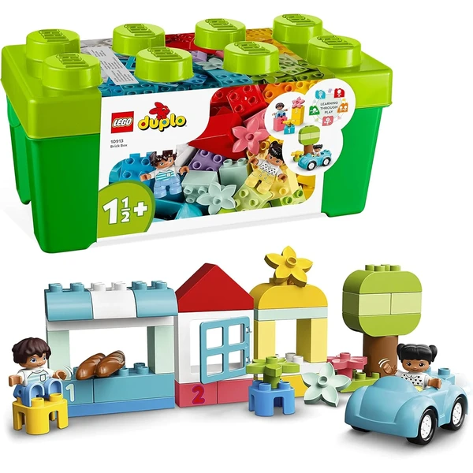
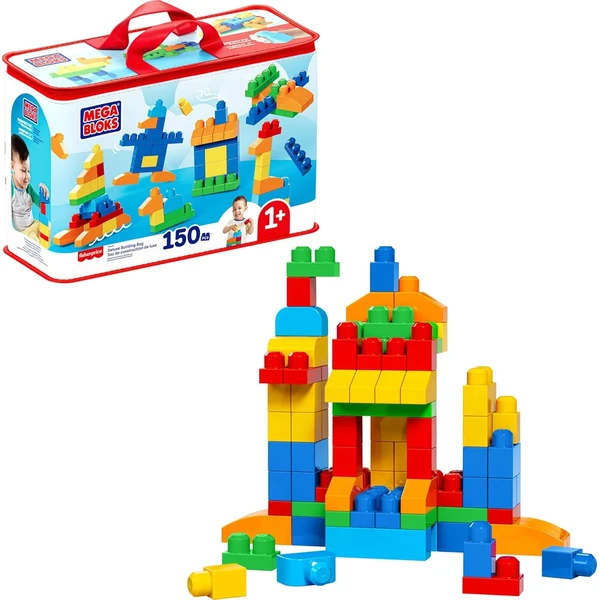
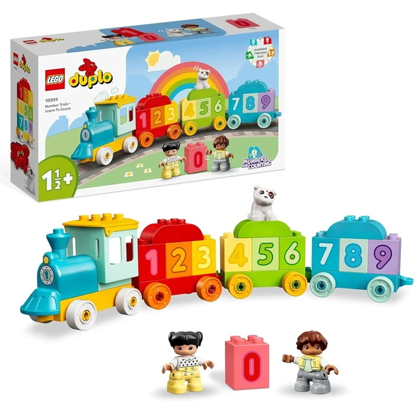
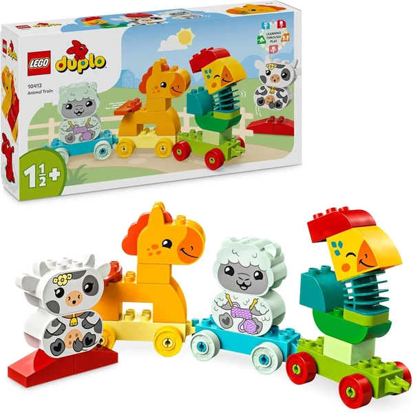

Bolsa 60 bloques clásicos Mega Bloks
Una bolsa con 60 bloques grandes de colores clásicos y formas especiales, pensada para manos pequeñas. Incluye su propia bolsa para guardar todas las piezas.
⭐ ¿Por qué nos gusta?
- ✔ 60 bloques de colores y formas variadas.
- ✔ Tamaño grande, fácil de encajar.
- ✔ Bolsa incluida para recoger y guardar.
💬 Lo que más destacan las familias
Se repite bastante el comentario de que las piezas son fáciles de encajar incluso para los primeros intentos de construir torres. La bolsa de guardado también gusta, porque ayuda a que la recogida no se convierta en un caos.
Ver en Amazon

Bolsa 60 bloques Big Building Bag Mega Bloks
Otra bolsa de 60 bloques grandes Mega Bloks, con un surtido de colores distinto a la versión clásica. Mismo concepto de piezas grandes y bolsa de almacenaje incluida.
⭐ ¿Por qué nos gusta?
- ✔ 60 bloques de colores y formas variadas.
- ✔ Tamaño grande, fácil de encajar.
- ✔ Bolsa incluida para recoger y guardar.
💬 Lo que más destacan las familias
Un detalle que aparece una y otra vez es lo bien que combinan estas piezas con otros sets de bloques grandes que ya tuvieran en casa. El surtido de colores gusta especialmente a quienes buscan una paleta distinta a la versión clásica.
Ver en Amazon

Caja de ladrillos LEGO Duplo
Una caja de almacenaje con ladrillos LEGO Duplo, un coche con ruedas móviles y dos figuras, pensada para el aprendizaje de los primeros números. Incluye quince ideas de construcción para empezar a jugar nada más abrirla.
⭐ ¿Por qué nos gusta?
- ✔ Incluye coche, figuras y ladrillos numerados.
- ✔ Quince ideas de construcción incluidas.
- ✔ La propia caja sirve para guardar las piezas.
💬 Lo que más destacan las familias
Entre las familias que lo tienen se comenta que las quince ideas incluidas ayudan mucho a arrancar el juego sin necesitar imaginación extra al principio. También se valora que el coche y las figuras den pie a inventar sus propias historias.
Ver en Amazon

Bolsa deluxe 150 bloques Mega Bloks
Una bolsa con 150 bloques de colores clásicos y nuevas formas, en un formato tipo maleta reutilizable para guardarlos con facilidad. Compatible con el resto de sets Mega Bloks de la misma línea.
⭐ ¿Por qué nos gusta?
- ✔ 150 piezas, ideal para construcciones más grandes.
- ✔ Maleta reutilizable para guardarlas.
- ✔ Compatible con otros sets de la misma línea.
💬 Lo que más destacan las familias
Los compradores valoran especialmente tener tantas piezas para hacer construcciones más grandes sin quedarse cortos a mitad de la torre. La maleta reutilizable también gusta porque facilita guardarlo todo sin perder piezas.
Ver en Amazon

Tren de los números LEGO Duplo
Un tren con ladrillos numerados del 1 al 10 y dos figuras, pensado para cargar y descargar vagones mientras se aprenden números y colores. Las ruedas móviles invitan a empujarlo por el suelo.
⭐ ¿Por qué nos gusta?
- ✔ Diez ladrillos numerados del 1 al 10.
- ✔ Vagones para cargar y descargar piezas.
- ✔ Incluye dos figuras y un perro.
💬 Lo que más destacan las familias
Muchos padres coinciden en que el juego de cargar y descargar los vagones es lo que más engancha, más incluso que aprender los números en sí. Las ruedas que ruedan de verdad por el suelo también suman puntos entre los peques.
Ver en Amazon

Tren de los animales LEGO Duplo
Un tren con tres vagones y cuatro animales de granja construibles (gallo, caballo, cordero y vaca), pensado para emparejar cada animal con su vagón del mismo color. Ayuda a trabajar la motricidad fina al conectar las piezas.
⭐ ¿Por qué nos gusta?
- ✔ Cuatro animales de granja construibles.
- ✔ Tres vagones conectables por colores.
- ✔ Piezas grandes y seguras.
💬 Lo que más destacan las familias
Lo que más suele gustar es que cada animal tenga su vagón del mismo color, así los niños aprenden a emparejarlos casi sin darse cuenta. Construir cada animalito pieza a pieza también les da una sensación de logro que repiten una y otra vez.
Ver en Amazon